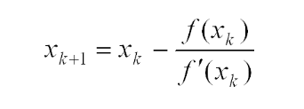
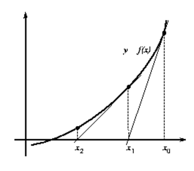
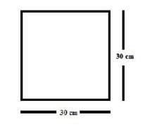
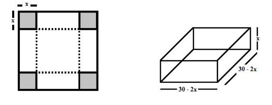

Home
HomeCálculo Númerico
Cálculo númerico de uma forma diferente

Método de Newton
UEPB, 18 de Setembro - 2016
Teorema:
Sejam f(x), f’(x) e f’’(x) contínuas num intervalo I que contém a raiz x = 𝜉 de f(x) = 0.
Supor que f’(𝜉) ≠ 0. Então existe um intervalo Ī ⊂ I, contendo a raiz 𝜉 tal que x0 ∈ Ī ,
a sequência {xk} gerada pela Fórmula 1 convergirá para a raiz.
O método de Newton se baseia na reta tangente à curva que liga o f(xk) ao x k+1, onde k inicia-se com o valor 0, que é a aproximação inicial dada para iniciar o cálculo dado pela fórmula abaixo. Com base no x0 , encontra-se o x1 e assim por diante. E a cada iteração, aproxima-se cada vez mais da raiz, diminuindo o erro.
Fórmula 1
O erro relativo é dado por:
Er =(xk - xk-1)/xk
É importante também lembrar que a escolha da aproximação inicial (x0 ) é essencial para um bom desempenho do método de Newton. Geralmente, testa-se valores para o x0 na função f(x), se o valor de f(x0) for baixo, o desempenho do método será satisfatório.
Iterações do método de Newton graficamente
O método de Newton não utiliza o teorema de Bolzano. Assim, determina-se um elemento “x” para ser aplicado no sistema, conforme foi supracitado.
Após determinar este elemento, calcula-se as aproximações da raiz, seguindo a equação iterativa. O método de Newton é um método que não realiza verificações sucessivas, que averiguam se f(x+1) x f(x) < 0. Assim, analogicamente, há uma descoberta sequencial dos elementos, até que o erro relativo entre ‘x+1’ e ‘x’ seja menor que o erro pré-determinado no caso aplicado. Ou seja:
- Determinado o elemento, o mesmo deve ser aplicado na equação iterativa (fórmula 1).
- Para se achar o termo ‘x+1’, utiliza-se o elemento ‘‘x’ a ser aplicado na fórmula 1, e seu respectivo f(x) e f’(x);
- Após determinado o elemento ‘x+1’, calcula-se o erro relativo entre o elemento ‘x+1’ e o elemento ‘x’:
- Se o erro relativo for igual a zero, o elemento ‘x+1’ é raiz exata da função;
- Se o erro relativo for menor do que o erro determinado no sistema, determina-se o elemento ‘x+1’ como a raiz aproximada da função;
- Se o erro relativo for maior que o erro determinado no sistema, determina-se então um próximo elemento, onde o atual elemento ‘x+1’ assume o posto do elemento ‘x’ e, consequentemente, o próximo elemento encontrado será o elemento ‘x+1’.
Você sabia?
A maioria dos super computadores não possui a unidade de operação de divisão.
Por que isso acontece?
Porque uma operação de divisão em um computador pode levar cerca de 20 a 25 ciclos de relógio (correspondente ao número de impulsos por segundo, expresso em Hertz (Hz)), isso é cinco vezes mais tempo que a operação de multiplicação.
Em vez disso, uma outra unidade de divisão, usando uma base de cálculo numérico, através do método de newton,permitimos que operações de divisões sejam feitas de forma mais rápida.
Exemplo 1: Utilizando o método de newton(ou tangente) determine uma aproximação, com e < 10-2, para a raiz da função:
F(x) = 2x² - 5x + 2
Resolução: Primeiro passo para usarmos o método de newton é calcularmos a derivada da função F. Assim temos:
F’(x) = 4x - 5.
Próximo passo é pensarmos em um “chute” inicial que é o X0. Se aplicarmos por exemplo 0 em F temos:
F(0) = 2*(0)² - 5*0 + 2
F(0) = 2
Dessa forma identificamos que o valor 0 não é raiz de F, pois não zerou a função, assim podemos utilizá-lo para gerar novos valores que convergem para a raiz. Assim temos:
[Formula]Aplicando os respectivos valores temos:
[Formula]E repetimos o processo até obtermos e < 0,01.
[Formula]Portanto concluímos que uma das raízes de F é X = 0,5.
Exemplo 2: Seja uma chapa metálica de 30cm X 30cm. Veja figura abaixo:
Se cortarmos um quadrado de lado x em cada um dos cantos desta chapa e vincarmos as abas que sobraram obteremos uma caixa sem a tampa conforme a figura a seguir.
Observe que se efetuarmos o produto das 3 dimensões obtemos a função que calcula o volume da caixa. Observe:
F(x) = (30 – 2x) * (30 – 2x) * x
F(x) = (30² – 30 * 2x – 2x * 30 + 4x²) * x
F(x) = (900 – 60x – 60x +4x²) * x
F(x) = (900 – 120x + 4x²) * x
F(x) = 4x³ - 120x² + 900x
Sabendo que o volume desta caixa é igual a 1507,1 cm³. Utilize o método de Newton para encontrar a altura x com erro e < 10-2.
Resolução:
Sabendo que F(x) = 4x³ - 120x² + 900x, e que o volume da caixa é 1506,2 cm³. Temos que F(x) = 4x³ - 120x² + 900x - 1507,1 = 0. Assim podemos usarmos o método de newton para acharmos o valor da altura x.
Primeiro passo para usarmos o método de newton é calcularmos a derivada da função F. Assim temos:
F’(x) = 12x² - 240x + 900Próximo passo é pensarmos em um “chute” inicial que é o X0. Se aplicarmos por exemplo 0 em F temos:
F(x) = 4(0)³ - 120(0)² + 900(0) – 1507,1
F(x) = – 1507,1
Assim encontramos um valor muito distante de 0. Portanto não é uma boa utilizarmos 0 como chute inicial, pois seria necessário muitas iterações(vale lembrar que funcionaria, porém levaria mais tempo). Se tomarmos X0 = 8 tem-se o seguinte:
F(x) = 4(8)³ - 120(8)² + 900(8) - 1507,1
F(x) = 4*512 – 120 * 64 + 7200 - 1507,1
F(x) = 2048 - 7680 + 5692,9
F(x) = 60,9.
Assim, aplicamos os respectivos valores.
[Formula]Portanto concluímos que a altura é x = 8,237 cm.